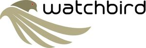

Trade Mark Journal No.2025/034 22 August 2025
WO0000001851357 (9,10,25)
Office of origin: Norway
Date of International Registration:21 February 2025
Date of designation in the UK:
21 February 2025

The mark contains the colours black, light brown green, dark brown green and red.
International priority date claimed: 23 August 2024
(Norway)
(202409163)
- Class 9
- Sensor controllers, sensor switches, sensors, sensor software, sensors and detectors, coolant temperature sensors, timing sensors, engine sensors, brake pad wear sensors, privacy sensors, measuring instrument sensors, sensors, detectors and monitoring instruments, position sensors, sensors for determining speed, sensors for detecting objects, sensors for measuring speed, sensors for use in facility control, sensors for use in oceanography, sensors for use in machine control, sensors for meteorological use, sensors for detecting intrusions, sensors for use with machine tools, sensors for monitoring physical movements, sensors for the internet of things [IoT], sensors for detecting the opening and closing of windows, sensors for detecting the opening and closing of doors, sensors [measuring apparatus], other than for medical use, on-off sensors, piezoelectric sensors, optical sensors, photoelectric sensors, electric sensors, false sensors, electro-optical sensors, electronic sensors, fiber optic sensors, magnetic sensors, digital sensors, infrared sensors, oil-water level sensors, thermal sensors [thermostats], pyroelectric infrared sensors, active infrared sensors, digital sensory devices, gyroscopic sensors with gps functions, electronic sensors for measuring solar radiation, electronic sensors for measuring of solar radiation, avalanche probes with sensors for measuring snow depth, motion sensor, presence sensor, cameras containing a linear image sensor, vibration sensors, distance sensors, acceleration sensors, pollution sensors, motion sensors, photo sensors, biochip sensors, LED position sensors, remote temperature sensors, rotation measurement sensors, laser sensors, rotation control sensors, humidity sensors, flame sensors, alarm sensors, mass flow sensors, air quality sensors, depth sensors, humidity sensors, shock sensors, biosensors, air temperature sensors, measurement sensors, light sensors, synchronization sensors, heat sensors, radiation sensors, shutter sensors, fire sensors, touch screen sensors, vibration sensors, distance sensors, pressure sensor resistors, speed sensors, automatic sun tracking sensors, electronic motion sensors, electronic measurement sensors, optical speed sensors, electronic pressure sensors, magnetic resistance sensors, electric current sensors, electrochemical gas sensors, magnetic flux sensors, motion sensors for security lights, capacitive touch sensors (PCT), refrigerator alarm sensors, microwave intrusion sensors, ultrasonic intrusion sensors, washing machine alarm sensors, vehicle parking sensors, ultrasonic sensors for use on vehicles, vibration sensors for installation in wind turbine housings, electronic control sensors for motors, temperature sensors for scientific use, vibration sensors for installation in wind turbine housings, cameras with linear image sensors, oxygen sensors, not for medical use.
- Class 10
- Sensors and alarms for patient monitoring, sensor devices for medical use in diagnosis, sensor devices for medical use in monitoring vital functions in patients, catheters with pressure microsensor, temperature sensors for medical use, ultrasound sensors for medical use, precision sensors for medical use, temperature sensors for medical use, oxygen sensors for medical use.
- Class 25
- Sportswear incorporating digital sensors.
WATCHBIRD AS
Representative: ONSAGERS AS, Postboks 1813 Vika, N-0123 OSLO, NORWAY